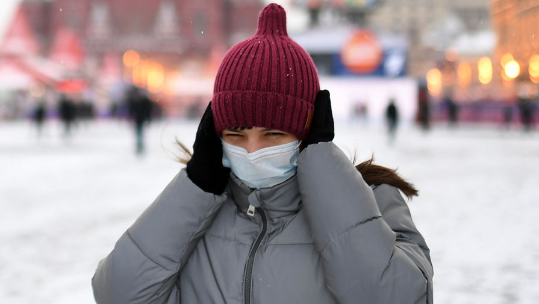

Прыщи и раздражения: в каких случаях маска может навредить лицу
Проблемы в виде сухости, раздражения кожи и высыпаний возникают у людей при неправильном ношении маски.Об этом изданию РБК рассказала врач-дерматолог Инна Петросова.
В свою очередь врач-дерматовенеролог ГБУЗ «МНПЦДК ДЗМ» Людмила Анохина посоветовала не носить одну и ту же одноразовую маску в течение дня: ее нужно менять раз в два часа.Кроме того, следует остерегаться окрашенных масок.В противном случае все это может спровоцировать воспаление.
Однако врач-косметолог Ирина Даниленко заявила «Газете.Ru», что защитная маска не может вызывать акне у людей, которые не имеют к этому предрасположенности.
«Воспалительные процессы связаны исключительно с тем, что у человека уже есть проблемы с кожей: она жирная либо есть небольшие очаги высыпаний», — отметила Даниленко.
С ней согласилась врач-дерматовенеролог Екатерина Сакович.Она уточнила, что раздражение или покраснения у людей со здоровой кожей могут проявиться только в случае аллергии — если есть реакция на сам материал медицинской маски.
«В другом случае маска не несет в себе никаких последствий.Нужно покупать обычные медицинские маски, которые сделаны из дышащего материала, и проблем с кожей быть не должно», — пояснила медик.Дерматолог Даниленко в свою очередь призвала использовать одноразовые средства защиты и менять их каждый час, чтобы не было дальнейшего распространения кожной инфекции.
У людей с проблемной кожей очаги акне могут увеличиваться по нескольким причинам.Среди них — ношение маски на улице в морозную или слишком теплую погоду, пояснила «Газете.Ru» дерматолог Виктория Радимова.В данном случае в СИЗ скапливается конденсат от выдыхаемого воздуха, что и провоцирует воспаление.
«Влажная среда — это отличное условие для развития бактерий.Также я бы посоветовала не наносить жирные крема и тональные средства под маску, поскольку они закупоривают поры.По возвращении домой стоит умыться и только тогда увлажнить кожу», — рассуждает врач.
Кроме того, раздражение может вызывать и механическое воздействие.В зависимости от типа маски меняются проблемные зоны — к примеру, респираторы, в отличие от медицинских масок, достаточно сильно давят на кожу и могут ее натирать, вследствие чего появляется воспаление.В местах контакта кожа повреждается, начинает ускоренно терять влагу и в результате впускает внутрь бактерии.
Радимова напомнила, как определить, есть ли у человека акне.Основные симптомы — мелкая сыпь на лице и груди, гнойники, пигментация темно-розового или коричневого цвета либо рубцы после засыхания прыщей.
«Также имеет значение повышенная жирность кожи и волос.Причем, если упустить начало лечения угревой сыпи, она может распространиться на другие участки тела: грудь или спину, что значительно ухудшает эстетический вид человека», — предупредила она.
После того как человек заметил проблемные участки, следует обратиться к дерматологу и начать лечение, которое назначают в соответствии со степенью поражения кожи.
Лечение угревой сыпи проводится в комплексе и, в первую очередь, направлено на предупреждение образования новых высыпаний.Затем следует удалить уже образовавшиеся подкожные прыщи посредством специальных комедолитических препаратов.Помимо этого, пациенту подбираются средства, чье действие направлено на снижение выработки кожного сала.Это могут быть гормональные препараты, а также средства на основе ретиноидов.
«Не стоит забывать и о поиске первоначальной причины, которая и вызвала сыпь.Если дело в нарушениях работы желудочно-кишечного тракта, то начинается работа и с этим.После проведения лечения дерматолог дает рекомендации по профилактике — к примеру, не трогать лицо грязными руками, иначе вновь начнется воспаление», — разъяснила Радимова.
Категорически нельзя давить прыщи и черные точки, поскольку при неправильном удалении кожа травмируется и поры расширяются, что приводит к инфекциям.Важно, по мнению специалиста, и правильно питаться, а также пить не менее двух литров не газированной и не сладкой воды в день.
Posted On: 2020-12-17T13:31:00
Posted By: Яна Штурма

Content Date: 2020-12-17
Download Date: 2021-04-21
Document ID: L0C04AOAZ